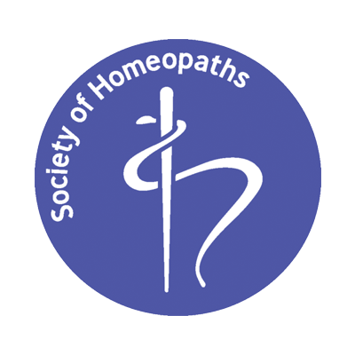
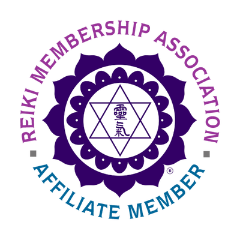
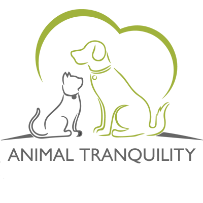
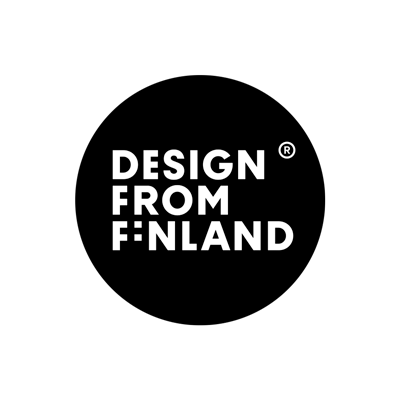
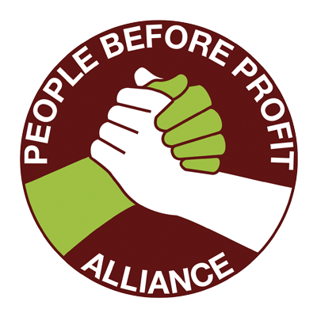
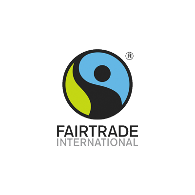

Suomalaisen homeopatian edelläkävijä
Suomalaisen homeopatian edelläkävijä
Vuonna 2015 kolme alansa asiantuntijaa päätti yhdistää vuosikymmenten kokemuksen,
ystävyyden sekä intohimon terveyteen - syntyi Tositerveys. Me Tositerveydellä uskomme,
että hyvinvointi kumpuaa hyvästä energiasta. Hyvää energiaa voimme vahvistaa tarjoamalla
keholle ja sydämelle oikeanlaista ravintoa, lepoa sekä hyväksyvää läsnäoloa.
Tämän kokonaisvaltaisen hyvinvoinnin ylläpitoon tarjoamme valikoiman laadukkaita työkaluja sekä
palveluja. Kaikki tuotteemme ovat tutkijoiden testaamia ja suosittelemia. Ekologisuus sekä eettisyys
ovat yksi yrityksemme peruspilareista ja pyrimme suosimaan vastaanotollamme lähituotantoa.
Kaikki tuotteemme ovat ympäristö- ja FairTrade-merkittyjä.






Keitä me olemme?
Jokaisella meistä on morphogeeninen kenttä, joka on 12-ulottuvuuksinen entiteetti.
Toisinaan nämä kentät kommunikoivat keskenään ja auttavat meidät aarteiden luo. Näin
kävi myös vuonna 2007 Hengen ja Tiedon messuilla, missä kolmikkomme polut kohtasivat
Juuritieto-keskustelupaneelissa. Meitä yhdistää syvä yhteys ja palava halu tarjota ihmisille
todellista, kokonaisvaltaista hyvinvointia. Kun ihmisten kehorakenne on muuttumassa hiilipohjaisesta
kristalliseksi, otamme yhdessä askeleet kohti täyttä loistoa.
Vaikuttavan uran hyvinvointialan parissa tehnyt tietokirjailija, luennoitsija, näkijä ja rakkauden polun kulkija. Hiljaisen Liekin Voima -blogissa ammennetaan voimaa luonnosta ja lempeydestä. Ida on myös rautainen eläinkommunikointialan osaaja ja etähoitomuotojen (reiki 2012) edelläkävijä.
Hyvinvointialan huippuosaaja ja visionääri jo toista vuosikymmentä. Luonut menestyksekkään akateemisen uran tutkimalla hiekkojen terveydellisiä ominaisuuksia muiden alan ammattilaisten kanssa. Hallitsee energia-alan uusimmat ja kehittyneimmät laitteistot ja menetelmät. Tositerveyden perustajajäsenenä sitoutunut pitämään ikuisesti huolta energisestä hyvinvoinnistasi.
Valmistunut Ypäjän hevosopistosta hevoskuiskaajan maisteritutkinnolla. Henkimaailman eritysosaaja monien vuosien kokemuksella. Matkustanut Etelä-amerikkaan, Afrikkaan ja Aasiaan tutkimaan maailman energiavirtoja, jonka jälkeen palasi Suomeen levittämään positiivista chi-energiaa kotimaassaan. Tositerveyden henkiasiantuntija ja yksisarvishoidon pioneeri.
Tositerveyden tuotteet ja palvelut eivät ole lakisääteisten lääketieteen ammattilaisten hyväksymiä. Kaikki tuotteet ja palvelut on testattu vapaaehtoisten hippien toimesta. Tositerveys Oy ei ole vastuussa mahdollisesta mielenterveyden romahtamisesta, sisäisestä verenvuodosta, vastustuskyvyn heikkenemisestä, raskasmetallimyrkytyksestä tai kuolemasta.